Gửi tin sau 24h với OTN
Sau ngày 4 tháng 3 Facebook sẽ cung cấp một loại tin nhắn mới có thể giúp bạn tiếp cận đối tượng của mình bên ngoài cửa sổ 24 giờ miễn phí có tên gọi là One-Time Notification.
Nó hơi khác so với các tin nhắn miễn phí khác mà bạn có thể gửi qua thẻ. 1. Bạn có thể sử dụng nó cho mục đích quảng cáo. 2. Người dùng phải bấm vào nút Notify Me trước để nhận thông báo. 3. Chỉ được gửi 1 tin nhắn đến người dùng nhận thông báo (kèm theo nút bấm).
Vì vậy, hãy đọc bài viết này để hiểu khi nào và làm thế nào bạn có thể sử dụng One-Time Notification trong AhaChat.
1. Sử dụng OTN khi nào
Có nhiều trường hợp sử dụng, bạn có thể thực sự sáng tạo ở đây. Điều duy nhất bên cạnh các quy tắc chung của Facebook là người dùng phải ‘opt-in’ vào Chủ đề ứng với thông báo này. Vì vậy, bạn cần làm cho nó hấp dẫn để thuyết phục người dùng bấm vào nút ‘Notify Me’.
Trường hợp áp dụng:
- Thông báo khuyến mãi
- Chúc mừng sinh nhật
- Nhắc nhở mua hàng
- Phản hồi sản phẩm
- Danh sách chờ
- Cập nhật tin tức
- Thông báo sản phẩm mới
- Thông báo khóa học mới
- Thông báo video mới
- Thông báo livestream FB
Vì tất cả các loại tin nhắn này đều cần phải đăng ký riêng biệt. Có nghĩa là nếu bạn muốn gửi Broadcast thông báo giảm giá 50% cho các sản phẩm vào 8.3 thì khách hàng phải đăng ký vào Chủ đề: Thông báo khuyến mãi 8.3.
Chú ý những trường hợp không được dùng thông báo này (thay vào đó hãy dùng Thẻ Tin Nhắn) cho:
- Sau sự kiện mua hàng
- Thông báo cập nhật sự kiện
- Cập nhật tài khoản
- Hỗ trợ khách hàng
- Thông tin nhạy cảm
- Tin nhắn không rõ ràng, spam, khó hiểu hoặc gây hiểu lầm
Ví dụ của Facebook cho việc chọn tham gia và thông báo thực tế.
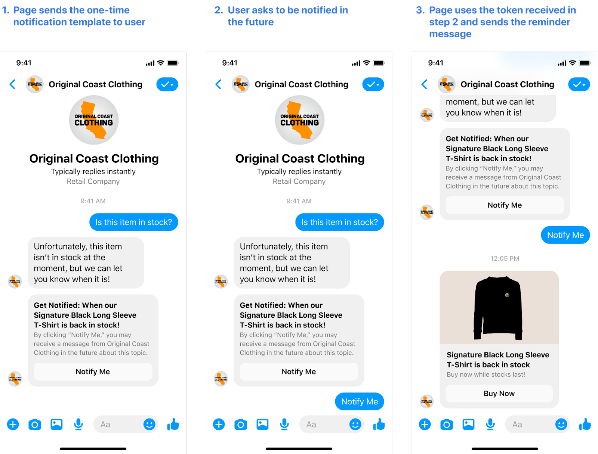
2. Cách xin quyền OTN
Rất đơn giản, chỉ cần truy cập cài đặt trang của bạn (trên cùng bên phải), sau đó chọn Tin nhắn nâng cao từ giữa danh sách Bạn cũng có thể chỉ cần sử dụng một trong các liên kết dưới đây bằng cách thay thế tên trang thành của bạn. Phiên bản cá nhân hoặc doanh nghiệp:
Cá nhân: https://www.facebook.com/YOURPAGENAMEHERE/sinstall/?tab=mesbah_pl platform
Doanh nghiệp: https://business.facebook.com/YOURPAGENAMEHERE/sinstall/?tab=mesbah_pl platform
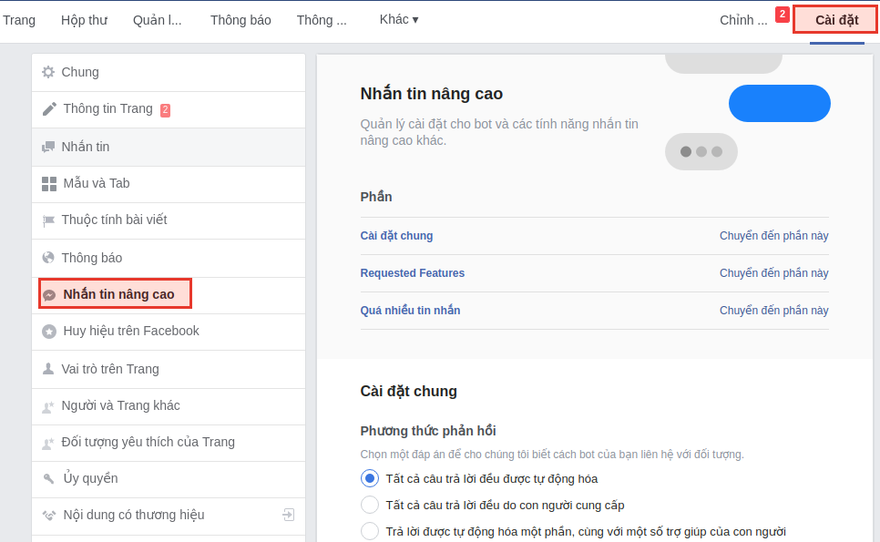
Sau đó chỉ cần cuộn xuống cho đến khi bạn thấy tùy chọn Thông báo một lần, nhấp vào nút Yêu cầu và xác nhận thông báo bật lên.
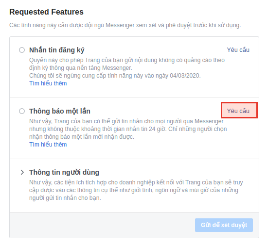
Sau đó, bạn sẽ nhận được văn bản sau đây và một tùy chọn xác nhận. Chỉ cần nhấn Xác nhận.
Tính năng Thông báo một lần là “Sản phẩm Beta” phục vụ cho Điều khoản thử nghiệm sản phẩm Beta của Facebook, bao gồm Điều khoản dịch vụ của Facebook và các điều khoản trực tuyến khác — các điều khoản được nêu ra để tham khảo tại đây (“Điều khoản thử nghiệm”). Bằng cách nhấp vào “Yêu cầu” ở bên dưới, bạn (1) đồng ý với Chính sách nền tảng của Facebook, (2) đồng ý với Điều khoản thử nghiệm cũng như cam kết rằng mọi nhà phát triển có quyền truy cập vào Sản phẩm Beta thay mặt bạn hoặc Trang của bạn đều đồng ý và tuân thủ Điều khoản thử nghiệm và (3) bảo đảm rằng bạn có quyền đồng ý với Điều kiện thử nghiệm thay cho người sở hữu Trang đang nắm quyền truy cập vào Sản phẩm thử nghiệm này.
Vậy là xong, FB sẽ phê duyệt ngay lập tức cho bạn. Tuy nhiên, họ có thể lấy đi quyền này khỏi Page nếu bạn không tuân thủ các quy tắc.
3. Cách sử dụng OTN
Đây là một loại tin nhắn khác với một văn bản bình thường. Nó sẽ gồm tiêu đề, mô tả và một nút bấm 'Notify Me'. Chú ý là bạn sẽ chỉ được sửa tiêu đề, còn mô tả và nút bấm sẽ tự chuyển sang ngôn ngữ của người dùng và bạn không có quyền can thiệp.
Ví dụ (khi người dùng sử dụng English US):
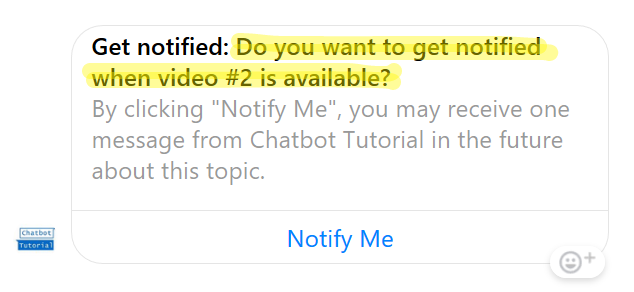
Ví dụ (khi người dùng sử dụng Vietnamese)
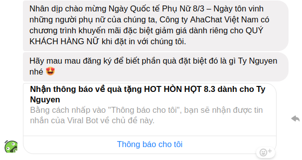
Nhiệm vụ của bạn là làm sao tạo một tiêu đề thật hấp dẫn để thu hút người dùng bấm vào nút 'Thông báo cho tôi'.
Sau đó bạn có thể gửi đến một tin nhắn quảng cáo ngoài 24h. Và dù người dùng có bấm bao nhiêu lần vào ‘Thông báo cho tôi’ đi nữa thì bot cũng chỉ gửi được 1 tin nhắn tới người dùng đó 1 lần mà thôi (không lo bị spam).
Chú ý 1 tin nhắn ở đây là 1 văn bản kèm với nút bấm, hoặc 1 hình ảnh kèm với nút bấm, hoặc 1 thẻ ảnh kèm với nút bấm. Và đây chính là hạn chế lớn nhất của loại tin nhắn này.
4. Tạo OTN trong AhaChat
Bước 1: Tạo kịch bản để thu hút khách hàng đăng ký OTN Request
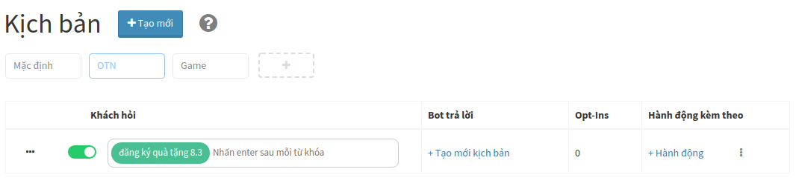
Bước 2: Tạo block HỘI THOẠI và chọn Tin nhắn của Khách là OTN Request.
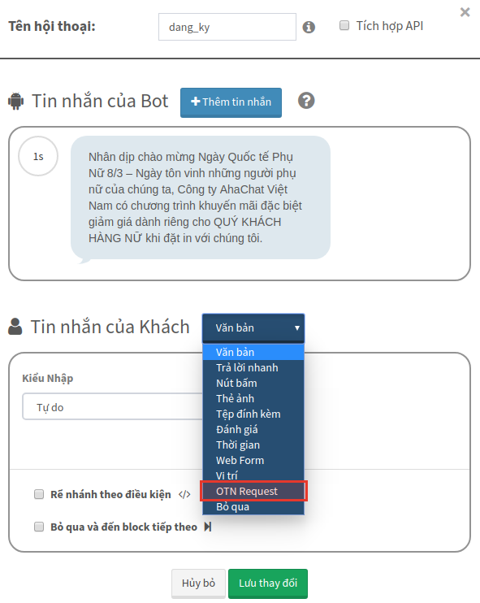
Bước 3: Xin quyền OTN Request từ chính Facebook (rất nhanh, chỉ mất 30s)
(1) Bấm yêu cầu quyền như hình
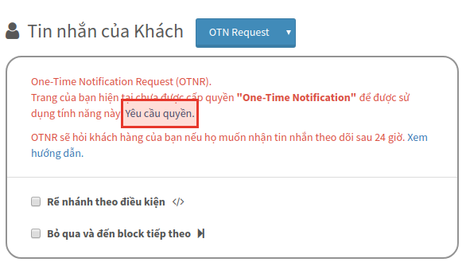
(2) Tại cài đặt facebook, bấm vào Yêu cầu để xác nhận
Bước 4: Sửa Tiêu đề của OTN Request cho thật hấp dẫn, ví dụ: quà tặng HOT HÒN HỌT 8.3 dành cho {{full_name}}.
Sau đó tạo mới Chủ đề là "Quà tặng ngày8.3"
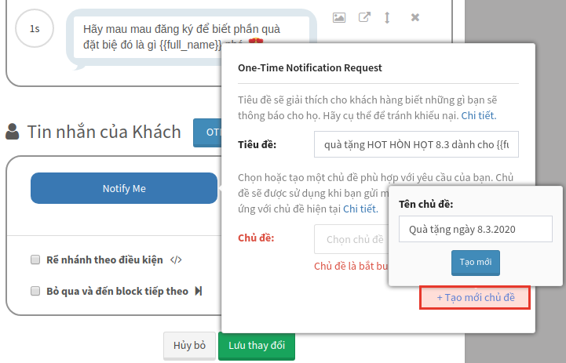
Kết quả (tùy theo ngôn ngữ mà thông báo sẽ hiển thị khác nhau, ví dụ tiếng anh là Notify Me, còn tiếng Việt là Thông báo cho tôi):
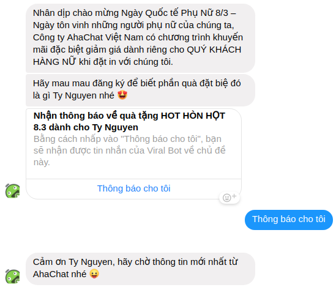
Bước 5: Tạo broadcast với block đầu tiên chỉ có 1 tin nhắn (có thể kèm nút bấm)
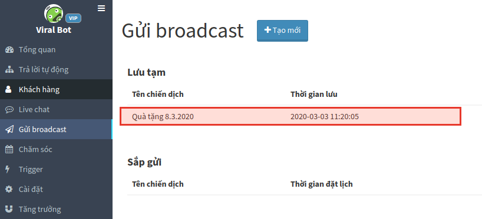
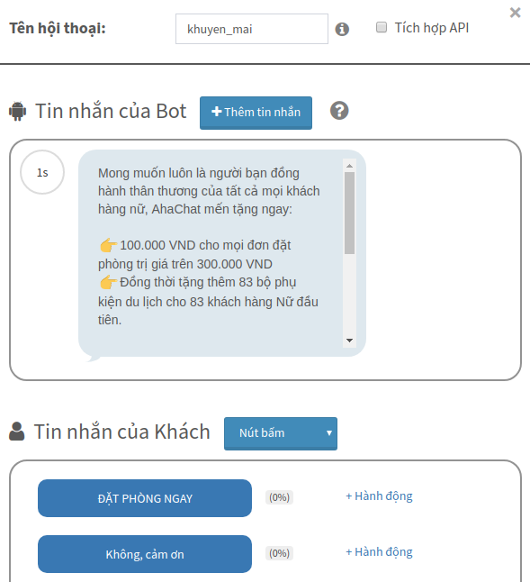
Bước 6: Chọn loại tin nhắn là Tin nhắn đăng ký và chọn là thẻ là "Quà tặng ngày 8.3"
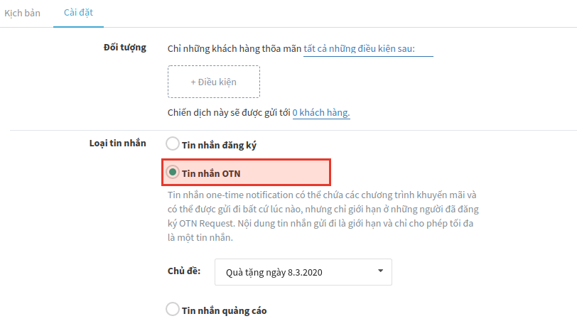
Cuối cùng bấm Test trên Messenger trước để xem kết quả rồi bấm GỬI
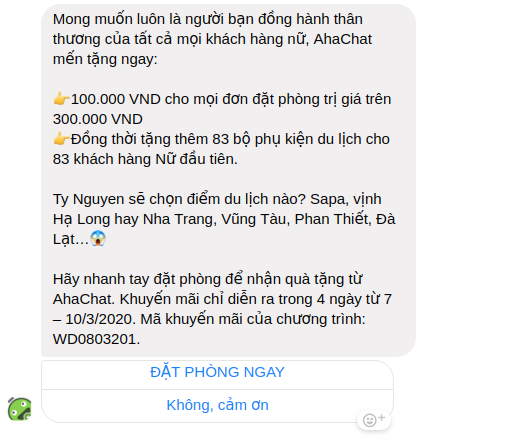
Chú ý nếu Khách hàng A bấm vào Nhận thông báo chủ đề “khuyến mãi 8.3.2020" và nhận broadcast về chủ đề này rồi. Thì sau đó dù khách hàng A tiếp tục bấm vào Nhận thông báo chủ đề "khuyến mãi 8.3.2020" bao nhiêu lần đi nữa thì bạn cũng không thể gửi tiếp broadcast về chủ đề này cho khách A đó nữa nhé!
Bạn có bất kỳ câu hỏi nào liên quan đến Gửi broadcast sau 24h bằng OTN trong AhaChat? Bạn muốn khởi chạy chiến dịch tiếp cận khách hàng của mình bằng Chatbot với một số lời khuyên chuyên môn từ Đối tác tiếp thị của Facebook? Đừng ngần ngại liên hệ với chúng tôi để có câu trả lời nhanh nhất và hiệu quả nhất! Tận hưởng công cụ chatbot miễn phí của chúng tôi mà không cần phải trả bất kỳ chi phí nào!